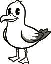

Sandy Cay
make yer landing
A guest’s week is kept in this browser alone.
Export before you close the tab, or the tide takes it.

A guest’s week is kept in this browser alone.
Export before you close the tab, or the tide takes it.